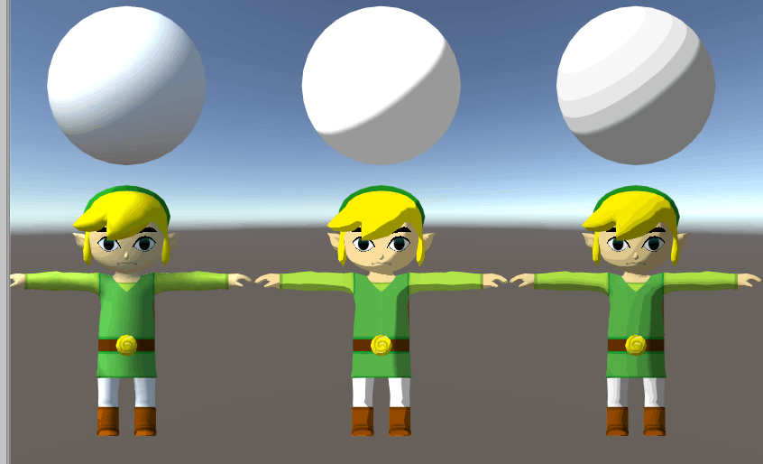

今天在知乎上看到一篇文章 《塞尔达风之杖技术分析-角色渲染和面部表情》，
想起自己虽然也看了不少卡通渲染的文章，却还没有手动撸过，决定练习一下。
风之杖的渲染其实非常简单，贴图只画色彩，不画光影和明暗，将法线方向和光线方向做点乘再和纹理相乘得到暗部强度，过渡方式实用 Smoothstep 或者通关渐变纹理指定。
Unlit Shader
先撸个无光照的架子往里面填东西1
2
3
4
5
6
7
8
9
10
11
12
13
14
15
16
17
18
19
20
21
22
23
24
25
26
27
28
29
30
31
32
33
34
35
36
37
38
39
40
41
42
43
44
45
46
47
48
49
50
51
52
53
54
55
56Shader "Wonderm/Unlit/Texture"
{
Properties
{
_MainTex("Texture", 2D) = "white" {}
}
SubShader
{
Tags { "RenderType" = "Opaque" }
LOD 100
Pass
{
CGPROGRAM
#pragma vertex vert
#pragma fragment frag
#pragma multi_compile_fog
#include "UnityCG.cginc"
struct appdata
{
float4 vertex : POSITION;
float2 uv : TEXCOORD0;
};
struct v2f
{
float2 uv : TEXCOORD0;
UNITY_FOG_COORDS(1)
float4 vertex : SV_POSITION;
};
sampler2D _MainTex;
float4 _MainTex_ST;
v2f vert(appdata v)
{
v2f o;
o.vertex = UnityObjectToClipPos(v.vertex);
o.uv = TRANSFORM_TEX(v.uv, _MainTex);
UNITY_TRANSFER_FOG(o,o.vertex);
return o;
}
fixed4 frag(v2f i) : SV_Target
{
fixed4 col = tex2D(_MainTex, i.uv);
UNITY_APPLY_FOG(i.fogCoord, col);
return col;
}
ENDCG
}
}
}
Dark
移除雾效，添加暗部，公式如下1
2shadow = dot(worldNormal,normalize(lightDir)) ;
color *= smoothstep(0.0, 0.1, shadow) * 0.4 + 0.6;
Shadow
添加一个 Pass 使用 Shadow Caster 即可1
UsePass "VertexLit/SHADOWCASTER"
Alpha
直接实用Cutout
1 | _Cutoff("Cutoff",Range(0,1))=0.4 |
Bug Fix
打工搞成丢进游戏角色里，发现在相机和光线平行的位置，影子会闪烁，而且渲染效果锯齿很差，看了下相机是 Defered，查看代码发现没有设置 LightMode
1 | Tags{ "LightMode" = "ForwardBase" } |
Extension
之前有看过卡通渲染的文章会选用一张 RampMap 来做过渡的渐变
扩展一下
1 | fixed toon = tex2D(_ToonMap, float2(1-shadow,0.5)).r ; |
Show
对比下渲染效果
